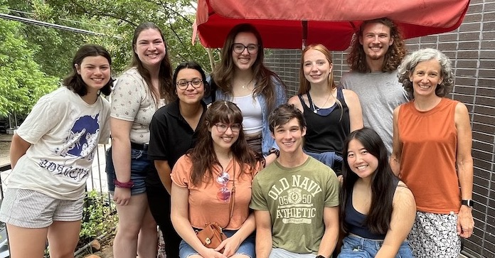

Welcome to the Dyer Lab at the University of Georgia!
We study how evolution, genetics, and ecology interact to shape the diversity that occurs in natural populations. We use various species of Drosophila flies in our research because they are useful in both genetic and ecological studies. To address questions we integrate molecular population genetics, genomics, classical genetics, phylogenetics, behavioral studies, and field studies.
